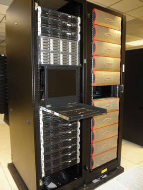

|

The focus of this project at Livermore has been to port the ZFS DMU to the Linux kernel as a replacement back-end for ldiskfs. Oracle is also keenly aware of ldiskfs’s limitations and has been working to integrate ZFS with Lustre on Solaris. For very large systems there is a recognition that a ZFS based back-end is required to meet the scaling and performance demands of large production clusters. We would love to see the ZFS posix layer finished as well but it is not a critical part of our plans in the near term. In particular, ZFS’s advanced architecture addresses two of our key performance concerns: random I/O, and small I/O. In a large cluster environment a Lustre I/O server (OSS) can be expected to generate a random I/O workload. There will be 100’s of threads concurrently accessing different files in the back-end file system. For writes ZFS’s copy-on-write transaction model converts this random workload in to a streaming workload which is critical when using SATA disks. For small I/O, Lustre can leverage a ZIL placed on separate SSD devices to maximize performance. Our intention is to deploy a 50 petabyte production Lustre file system based on this Linux ZFS port. With that much hardware on the floor failures of all parts of the system occur on a regular basis. For this reason, ZFS’s ability to detect and repair data corruption online is a critical feature for us. This includes cleanly handling many different failure modes without the need for an offline file system check. To prove we can successfully deploy a Lustre file system of this size based on a Linux port of ZFS, we have purchased a full storage scalable unit (SSU) of our target hardware for development and testing. An SSU is our fundamental building block when designing a Lustre file system. The idea is to add as many SSUs as needed to reach the design target for the system. Our Lustre ZFS SSU looks like this, and this hardware is being used to stabilize this code base for production use. |

ZFS SSU Hardware Specifications:
|